This vignette illustrates how to replicate the 4S methodology following the steps described Saulnier et al. (202? - preprint : arXiv:2407.08278). The 4S method is a comprehensive strategy in four consecutive steps to analyze the repeated item data of multidimensional measurement scales or questionnaires in longitudinal studies.
The 4S method successively
(1) structures the
scale into subdimensions satisfying three calibration assumptions
(unidimensionality, conditional independence, increasing monotonicity),
(2) describes each subdimension progression using
a joint latent process model (JLPM) which includes a
continuous-time item response theory model for the longitudinal subpart,
(3) aligns each subdimension’s progression with
disease stages through a projection approach,
(4)
identifies the most informative items across disease stages using the
Fisher information.
Importation
The following libraries are used in this vignette:
library(ggplot2) # data description plots
library(ggalluvial) # sankeyplot
library(psych) # step 1 : EFA # version prior 2.0 required
library(polycor) # step 1 : polychoric correlation matrix
library(lavaan) # step 1 : CFA
library(mokken) # step 1 : check monotonicity
library(plot.matrix) # step 1 : plot colored matrix
library(fmsb) # step 2 : plot spiderchart
library(survival) # data description : Kaplan Meier
library(JLPM) # steps 2 and 3 : model estimationDataset
The illustration is on a simulated dataset.
load("simulated_data.RData")The dataset is a simulated sample of N=700 patients with K=11 5-level items measured at repeated annual visits from 0 to 10 years, and a time-to-event collected in continuous time.
The data.frame is in longitudinal format with 2762 rows corresponding to the follow-up visits of the 700 patients, and 17 columns corresponding to the different variables:
- ID the identification number of the patient
- t the time of measurement (years in the study)
- X a binary time-independent covariate
- itemk the item k with level in {0, 1, 2, 3}
- stage the disease stage (0 to 4)
- T the minimum time between the event or censoring occurrence
- D the indicator of event or censoring
N <- length(unique(data$ID)) # nb individuals
K <- 11 # nb of items
nl <- 5 # nb of levels
str(data)
#> 'data.frame': 2762 obs. of 17 variables:
#> $ ID : num 1 1 1 1 2 3 3 3 3 3 ...
#> $ t : num 0 0.883 1.936 3.036 0 ...
#> $ X : int 1 1 1 1 1 0 0 0 0 0 ...
#> $ item1 : int 2 1 1 2 2 0 1 3 1 1 ...
#> $ item2 : int 1 2 1 2 2 1 1 1 0 0 ...
#> $ item3 : int 3 3 4 4 2 2 2 1 3 3 ...
#> $ item4 : int 1 2 2 4 1 2 2 1 3 1 ...
#> $ item5 : int 3 3 4 4 2 1 2 3 2 2 ...
#> $ item6 : int 1 0 0 0 0 2 3 2 3 2 ...
#> $ item7 : int 0 0 0 0 1 0 0 1 0 2 ...
#> $ item8 : int 0 0 0 0 0 1 1 2 2 2 ...
#> $ item9 : int 1 0 0 0 2 2 2 3 2 3 ...
#> $ item10: int 1 0 0 0 1 2 3 3 3 2 ...
#> $ item11: int 1 0 0 0 0 2 2 2 2 2 ...
#> $ stage : int 2 4 4 5 1 3 3 2 2 3 ...
#> $ T : num 3.646 3.646 3.646 3.646 0.644 ...
#> $ D : num 1 1 1 1 1 0 0 0 0 0 ...Description of the sample at baseline
data0 <- data[which(data$t==0),]
summary(data0)
#> ID t X item1 item2
#> Min. : 1.0 Min. :0 Min. :0.0000 Min. :0.000 Min. :0.000
#> 1st Qu.:175.8 1st Qu.:0 1st Qu.:0.0000 1st Qu.:1.000 1st Qu.:1.000
#> Median :350.5 Median :0 Median :1.0000 Median :1.000 Median :1.000
#> Mean :350.5 Mean :0 Mean :0.7229 Mean :1.367 Mean :1.144
#> 3rd Qu.:525.2 3rd Qu.:0 3rd Qu.:1.0000 3rd Qu.:2.000 3rd Qu.:2.000
#> Max. :700.0 Max. :0 Max. :1.0000 Max. :4.000 Max. :4.000
#> item3 item4 item5 item6
#> Min. :0.000 Min. :0.000 Min. :0.000 Min. :0.0000
#> 1st Qu.:2.000 1st Qu.:0.000 1st Qu.:1.000 1st Qu.:0.0000
#> Median :2.000 Median :1.000 Median :2.000 Median :1.0000
#> Mean :2.163 Mean :1.219 Mean :1.717 Mean :0.9471
#> 3rd Qu.:3.000 3rd Qu.:2.000 3rd Qu.:2.000 3rd Qu.:1.0000
#> Max. :4.000 Max. :4.000 Max. :4.000 Max. :4.0000
#> item7 item8 item9 item10
#> Min. :0.0000 Min. :0.00 Min. :0.000 Min. :0.000
#> 1st Qu.:0.0000 1st Qu.:0.00 1st Qu.:1.000 1st Qu.:1.000
#> Median :0.0000 Median :1.00 Median :2.000 Median :2.000
#> Mean :0.4757 Mean :0.99 Mean :1.657 Mean :1.817
#> 3rd Qu.:1.0000 3rd Qu.:2.00 3rd Qu.:2.000 3rd Qu.:2.000
#> Max. :3.0000 Max. :4.00 Max. :4.000 Max. :4.000
#> item11 stage T D
#> Min. :0.0000 Min. :1.000 Min. : 0.02081 Min. :0.0000
#> 1st Qu.:0.0000 1st Qu.:2.000 1st Qu.: 1.72060 1st Qu.:0.0000
#> Median :1.0000 Median :2.000 Median : 2.97674 Median :1.0000
#> Mean :0.9114 Mean :2.533 Mean : 3.46497 Mean :0.6629
#> 3rd Qu.:1.0000 3rd Qu.:3.000 3rd Qu.: 4.70674 3rd Qu.:1.0000
#> Max. :4.0000 Max. :5.000 Max. :10.00000 Max. :1.0000Items’ observed individual trajectories
par(mfrow=c(3,4), mar=c(4,4,3,1))
for(k in 1:K){ # for each item
plot(x = data$t[which(data$ID == 1)],
y = data[which(data$ID == 1),paste("item",k,sep="")],
xlim = c(0,10), ylim = c(0,nl-1), type = "l", lwd = 1,
main=paste("item",k,sep=""), xlab = "Years", ylab = "Level",
bty = "n", las = 1, cex.main = 1.5,
cex.axis = 1, axes = TRUE)
for(i in 2:N)
lines(x = data$t[which(data$ID == i)],
y = data[which(data$ID == i),paste("item",k,sep="")],
lwd = 1, lty = 1)
}Stage distribution over time
data$t_rounded <- round(data$t)
data$stage_factor <- factor(data$stage, levels=5:1)
ggplot(data,
aes(x = t_rounded, stratum = stage_factor, alluvium = ID,
fill = stage_factor, label = stage_factor)) +
geom_flow() +
geom_stratum(width = .45) +
theme_light() +
scale_fill_manual(values = c("#08306B","#2171B5","#6BAED6","#C6DBEF","#F7FBFF")) +
labs(y = "Nb of patients", x = "Years", fill = "Stage")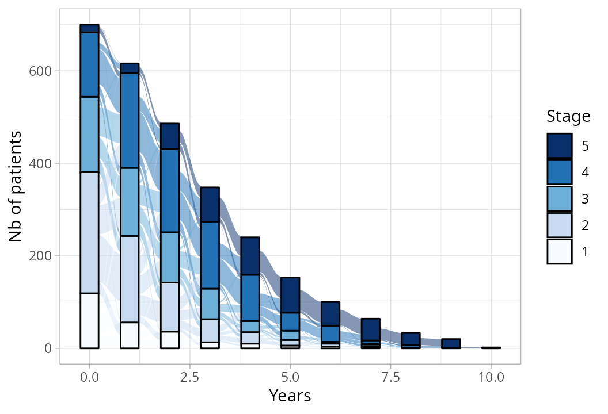
Time to event
KM <- survfit(Surv(time = T, event = D) ~ 1, data = data0)
par(mar=c(4,4,1.5,1))
plot(KM,
fun = "S", ylim = c(0,1), cex.axis = .8, cex.main = 1,
bty="n", las = 1, xlab="Years", ylab="Probability",
main = "Kaplan-Meier estimated survival function")
abline(h=.5,col="grey",lty=3,lwd=2)
abline(v=summary(KM)$table["median"],col="grey",lty=3,lwd=2)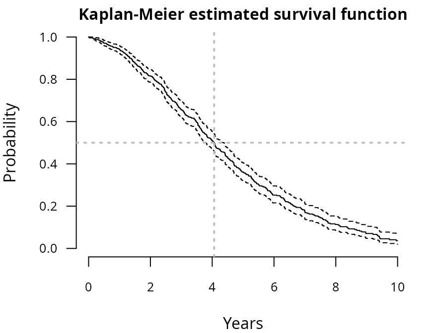
Among the patients, 464 (66%) experienced the event during the study, with a survival median around 4.06 years.STEP 1 - Structuring
Identification of the scale’s subdimensions
The first preliminary step consists in structuring the measurement scale into unidimensional subdimensions (also called latent traits) that comply three central assumptions:
- unidimensionality: all the items of a subdimension should represent an homogeneous latent trait,
- conditional independence: the latent trait should capture the whole correlation across items with no remaining residual correlation between items,
- increasing monotonicity: higher item level should consistently reflect a higher underlying trait level.
We followed the recommended strategy reported by the PROMIS (Patient-Reported Outcomes Measurement Information System) initiative in Reeve et al. (2007) [1] for cross-sectional data. We adapted the PROMIS method to longitudinal data by using a resampling strategy: we randomly selected a single visit per subject to create a pseudo independent sample of size N on which the PROMIS method could be used, and we replicated this procedure multiple times to account for sampling fluctuations.
Note that the three calibration assumptions may be successively evaluated with stepbacks or systematic reevaluations to measure the impact of certain decisions.
R <- 50 # number of replicates
seeds <- sample(x=1:1000,size=R)Illustration on replicate 1:
r <- 1 # replicate
set.seed(seeds[r]) # seed
# random selection of one visit per patient
select <- sapply(X=table(data$ID),
FUN=function(x){sample(1:x,size=1)})
data_r <- data[which(data$ID==1),][select[1],]
for(i in 2:N)
data_r <- rbind(data_r,data[which(data$ID==i),][select[i],])Unidimensionality
Determine the optimal number of subdimensions and item assignment to dimensions.
General EFA
An explanatory factorial analysis (EFA) is performed on all the item data to identify the independent subdimensions measured by the scale. The optimal number of subdimensions can be determined by dressing the scree plot of the successive eigenvalues and chosen the largest either as the largest number of factors with successive eigenvalues greater than value 1 (Kaiser criterion), or identifying the “elbow” where the eigenvalues begin to plateau (Cattell criterion). This analysis can be carried out using function fa.parallel() from the R-package psych.
par(mar=c(4.5,4.5,2,0),cex=.8)
screeplot <- fa.parallel(data_r[,c(paste("item",1:K,sep=""))],
fm = 'minres', fa = 'fa', cor='poly', plot=TRUE)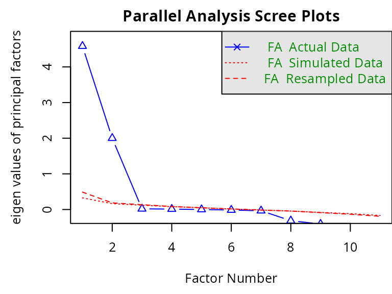
#> Parallel analysis suggests that the number of factors = 2 and the number of components = NAHere, the analysis suggests 2 factors.
Polychoric correlation matrix
Items are assigned to the subdimension they contribute the most based on factor loadings resulting from the polychoric correlation matrix, with rotation maximizing within-factor variance (ensuring that each item is strongly associated with its assigned dimension and weakly with others), and representing the strength of association between the items and the latent traits. We assume each item contributes to only one subdimension. If the higher loading of an item is lower than 0.3, its contribution is considered too small to be assigned to any subdimension.
pc <- hetcor(data_r[,c(paste("item",1:K,sep=""))], ML=TRUE)
efa2 <- fa(r=pc$correlations, nfactors=2, rotate="varimax")
contrib2 <- data.frame(ITEM = paste("item",1:K,sep=""),
FACT1 = efa2$loadings[,2],
FACT2 = efa2$loadings[,1])
contrib2$max_loading <- apply(X=contrib2[,-1],MARGIN=1,FUN=max)
contrib2$FACTOR <- ifelse(contrib2$max_loading == contrib2$FACT1,1,2)
contrib2$FACTOR[which(contrib2$max_loading<.3)] <- NA
par(mar=c(4,4,2,1),cex=.8)
barplot(cbind(FACT1,FACT2)~ITEM,
data=contrib2, beside=TRUE, col=c("blue","red"),
space = c(.1,2),ylim=c(-.1,1.2), xlab = "item",
las=1,names.arg=1:K,main="Items' contribution to 2 dimensions")
abline(h=0.3,lwd=2,lty=3,col="grey40")
abline(h=0,lwd=2,lty=1,col="black")
legend(x="topright",legend=paste("dimension ",1:2,sep=""),col=c("blue","red"),pch=16,bty="n")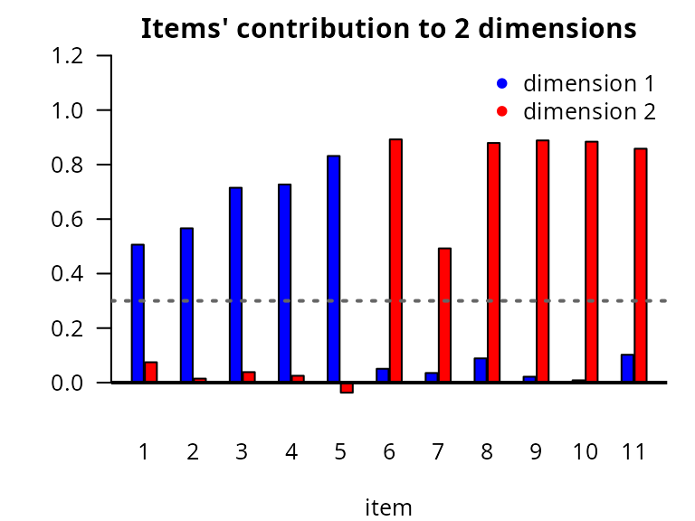
Item assignment: dimension 1 (blue) with items 1 to 4 and dimension 2 (red) with items 5 to 10.EFA per dimension
At this stage, one EFA can be performed per subdimension to ensure only one latent factor is highlighted.
par(mfrow=c(1,2),mar=c(4.5,4.5,2,0),cex=.5)
screeplot_dim1 <- fa.parallel(data_r[,paste("item",1:5,sep="")],
fm = 'minres', fa = 'fa', cor='poly')
#> Parallel analysis suggests that the number of factors = 1 and the number of components = NA
screeplot_dim2 <- fa.parallel(data_r[,paste("item",6:11,sep="")],
fm = 'minres', fa = 'fa', cor='poly')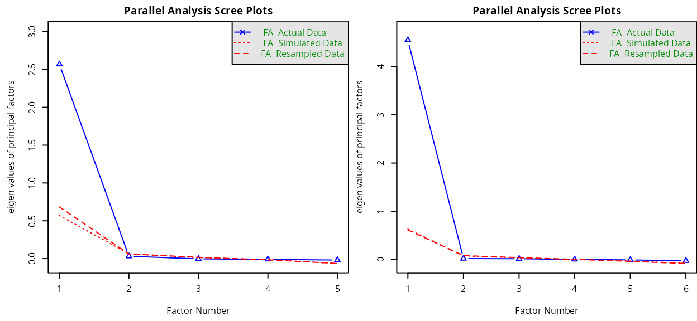
#> Parallel analysis suggests that the number of factors = 1 and the number of components = NAThe analysis concludes to 1 factor (i.e., unidimensionality) for both dimensions.
CFA
A confirmatory factorial analysis (CFA) is performed on the identified subdimensions to evaluate the model fit. According to Reeve et al. (2007), the model fit is considered sufficient if the following criteria are satisfied: comparative fit index (CFI) > 0.95, Tucker Lewis index (TLI) > 0.95, root means square error of approximation (RMSEA) < 0.06, and standardized root mean square residual (SRMR) < 0.08. CFI and TLI assess the fit between the estimated model and a null model assuming no constraint on the structure. RMSEA and SRMR assess the fit between the estimated model and the observed data. This analysis can be carried out using function cfa() from the R-package lavaan.
rep2 <- paste(paste(" dim1 =~ ",paste(paste("item",1:5,sep=""),collapse="+"),"\n"),
paste(" dim2 =~ ",paste(paste("item",6:11,sep=""),collapse="+")),sep="")
fit2 <- cfa(rep2,
data = data_r,
ordered = paste("item",1:K,sep=""))
fitMeasures(object=fit2,fit.measures=c("cfi","tli","rmsea","srmr"))
#> cfi tli rmsea srmr
#> 1.000 1.000 0.000 0.031The fit criteria are respected.
Conditional independence
The correlation matrix between the CFA predicted values and the observations is reported to identify residual correlation. PROMIS authors Reeve et al. (2007) [1] consider two items are substantially correlated if their residual correlation exceeds 0.2. In case the two correlated items are assigned to the same subdimension, one of them should be removed, as considered as redundant and according to clinical relevance.
N_cov <- list(
observed=inspect(fit2, 'sampstat')$cov,
fitted=fitted(fit2)$cov
)
N_cor <- list(
observed=cov2cor(N_cov$observed),
fitted=cov2cor(N_cov$fitted)
)
resid <- N_cor$observed - N_cor$fitted # residuals
round(resid,1)
#> item1 item2 item3 item4 item5 item6 item7 item8 item9 item10 item11
#> item1 0.0
#> item2 0.0 0.0
#> item3 0.0 0.0 0.0
#> item4 0.0 0.0 0.0 0.0
#> item5 0.0 0.0 0.0 0.0 0.0
#> item6 0.0 0.0 0.0 0.0 -0.1 0.0
#> item7 0.0 0.0 0.0 0.0 -0.1 0.0 0.0
#> item8 0.1 0.0 0.0 0.0 0.0 0.0 0.0 0.0
#> item9 0.0 0.0 0.0 0.0 -0.1 0.0 0.0 0.0 0.0
#> item10 0.0 0.0 0.0 0.0 -0.1 0.0 0.0 0.0 0.0 0.0
#> item11 0.1 0.0 0.1 0.0 0.0 0.0 0.0 0.0 0.0 0.0 0.0Here, no redundancy is observed.
Increasing monotonicity
The monotonicity is visually inspected for each item by plotting the mean item levels by decile of the rest-score of the assigned subdimension (i.e., sum-score of all the other items from the subdimension except this one), or the item higher-level probabilities by decile of the rest-score. Reeve et al. (2007) [1] recommend to visually check that the curves are consistently increasing or at least constant. This analysis can be carried out using function check.monotonicity() from the R-package mokken.
monot_D1 <- check.monotonicity(data_r[,paste("item",1:5,sep="")],minsize=50)
monot_D2 <- check.monotonicity(data_r[,paste("item",6:11,sep="")],minsize=50)
par(mfrow=c(3,4),mar=c(4.5,4,1,4),cex=.5)
col <- c(gray(.8),gray(.6),gray(.4),gray(.2))
# dimension 1
for(i in 1:5){
plot(y = monot_D1$results[[i]][[2]][,"P(X >=1)"],
x = monot_D1$results[[i]][[2]][,"Hi Score"],
type = "l", col = col[1], ylim = c(0,1), xlim = c(0,(5-1)*(nl-1)), las = 1,
bty = "l", xlab = "rest-score", ylab = "probability")
mtext(text = paste("item",i,sep=""), cex = .5, side = 3, line = 0, font = 2, col = "blue")
for(m in 2:4)
lines(y = monot_D1$results[[i]][[2]][,paste("P(X >=",m,")",sep="")],
x = monot_D1$results[[i]][[2]][,"Hi Score"], col = col[m])
par(new=TRUE)
plot(y = monot_D1$results[[i]][[2]][,"Mean"], x = monot_D1$results[[i]][[2]][,"Hi Score"],
lwd = 2, type = "l", col = "black", lty = 2, xlim=c(0,(5-1)*(nl-1)), ylim=c(0,nl-1),
xlab="",ylab="",yaxt="n",bty="l",legend=NULL,cex.lab=1.5,cex.axis=1.5,axes = F)
axis(4, line=0, las=1); mtext(text = "response", cex = .5, side = 4, line = 2.5)
}
# dimension 2
for(i in 1:6){
plot(y = monot_D2$results[[i]][[2]][,"P(X >=1)"],
x = monot_D2$results[[i]][[2]][,"Hi Score"],
type = "l", col = col[1], ylim = c(0,1), xlim = c(0,(6-1)*(nl-1)), las = 1,
bty = "l", xlab = "rest-score", ylab = "probability")
mtext(text = paste("item",5+i,sep=""), cex = .5, side = 3, line = 0, font = 2, col = "red")
for(m in 2:4)
lines(y = monot_D2$results[[i]][[2]][,paste("P(X >=",m,")",sep="")],
x = monot_D2$results[[i]][[2]][,"Hi Score"], col = col[m])
par(new=TRUE)
plot(y = monot_D2$results[[i]][[2]][,"Mean"], x = monot_D2$results[[i]][[2]][,"Hi Score"],
lwd = 2, type = "l", col = "black", lty = 2, xlim=c(0,(6-1)*(nl-1)), ylim=c(0, nl-1),
xlab="",ylab="",yaxt="n",bty="l",legend=NULL,cex.lab=1.5,cex.axis=1.5,axes = F)
axis(4, line=0, las=1); mtext(text = "response", cex = .5, side = 4, line = 2.5)
}
# legend
plot(x = c(0,1), y = c(0,1), col="white",main="", xlab = "", ylab = "",bty = "n", axes = FALSE)
legend(x="center",bty="n",cex=1,lwd=1,
legend=c(paste("obs P(Y >=",1:(nl-1),")",sep=""),"obs mean response"),
text.col=c(col,"black"),col=c(col,"black"),lty=c(rep(1,nl-1),2))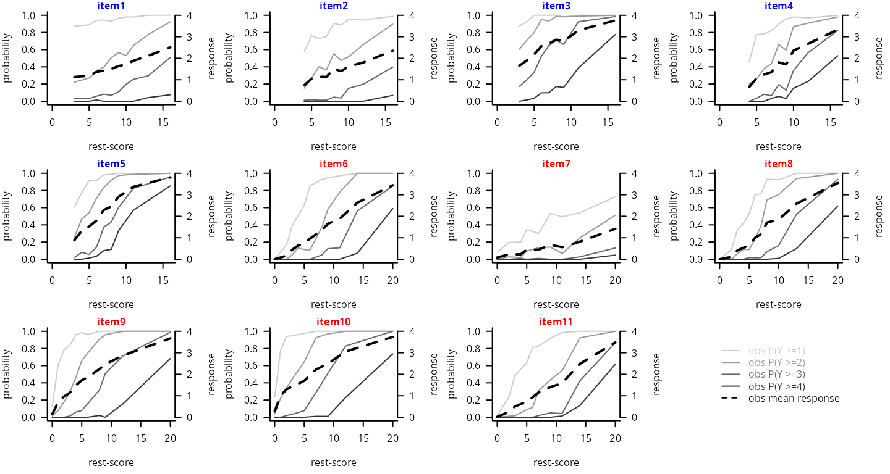
→ Results over replicates
The final structure is determined after the aggregation over replicates. Items consistently assigned to the same subdimension are assigned to it. Items repeatedly unassigned to any subdimension are excluded from the analysis as they provide no additional information. Items straddling two subdimensions are reviewed and assigned based on their clinical relevance and subdimension loadings.
REPL <- list(NULL)
for(r in 1:R){ # for each replicate
set.seed(seeds[r]) # seed
# random selection of one visit per patient
select <- sapply(X=table(data$ID),
FUN=function(x){sample(1:x,size=1)})
data_r <- data[which(data$ID==1),][select[1],]
for(i in 2:N)
data_r <- rbind(data_r,data[which(data$ID==i),][select[i],])
# item contributions
pc <- hetcor(data_r[,c(paste("item",1:K,sep=""))], ML=TRUE)
efa2 <- fa(r=pc$correlations, nfactors=2, rotate="varimax")
contrib2 <- data.frame(ITEM = paste("item",1:K,sep=""),
FACT1 = efa2$loadings[,2],
FACT2 = efa2$loadings[,1])
contrib2$max_loading <- apply(X=contrib2[,-1],MARGIN=1,FUN=max)
contrib2$FACTOR <- ifelse(contrib2$max_loading == contrib2$FACT1,1,2)
contrib2$FACTOR[which(contrib2$max_loading<.3)] <- NA
# save
REPL[[r]]$contrib <- contrib2
if(r != R)
REPL <- c(REPL,list(NULL))
}
par(mfrow=c(1,2),mar=c(4.5,4,.5,1),cex=.8)
# order : per replicates
contrib <- sapply(REPL, function(x) x$contrib$FACTOR)
plot(contrib, col = c("blue","red"),
key = NULL, xlab = "replicates", ylab = "item", main ="", las = 1)
# order : per percentage % over replicates
contrib_bydim <- t(apply(contrib,1,function(x){table(factor(x,levels=1:2))}))
contrib_bydim_matrix <- t(apply(contrib_bydim,1,function(x){rep.int(1:2,times=x)}))
plot(contrib_bydim_matrix, col = c("blue","red"),
key = NULL, polygon.cell = list(border=FALSE), axis.col = NULL,
xlab = "percentage of replicates", ylab = "item", main ="", las = 1)
segments(x0=.5, y0=seq(from=.5,to=K+.5,by=1), x1=75.5, y1=seq(from=.5,to=K+.5,by=1))
segments(x0=R+.5, y0=.5, x1=R+.5, y1=K+.5)
axis(1,line=0,lwd=1,labels=c("0%","25%","50%","75%","100%"),
at=c(0,R/4,R/2,R*3/4,R)+.5,cex.axis=1)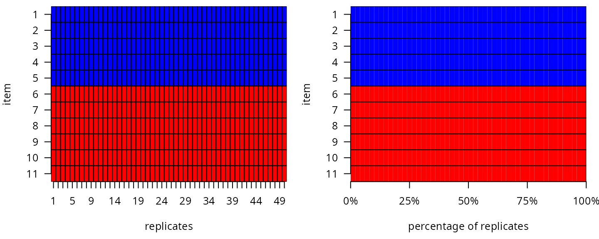
Final item assignment:
# dimension 1
item_num_d1 <- 1:5
item_lab_d1 <- paste("item",item_num_d1,sep="")
ni1 <- length(item_num_d1)
dim_col_d1 <- "blue"
item_col_d1 <- paletteer::paletteer_c("ggthemes::Green-Blue Diverging",n=ni1)
# dimension 2
item_num_d2 <- 6:11
item_lab_d2 <- paste("item",item_num_d2,sep="")
ni2 <- length(item_num_d2)
dim_col_d2 <- "red"
item_col_d2 <- paletteer::paletteer_c("ggthemes::Sunset-Sunrise Diverging",n=ni2+1)[-1] STEP 2 - Sequencing
Description of each subdimension progression
The trajectory of each dimension continuum underlying the repeated item data is modeled over time from the repeated item data using a joint Item Response Theory (IRT) model adapted to ordinal repeated measures and time-to-event data [2]. The model is composed of a longitudinal submodel and a survival submodel. The parameter are simultaneously estimated by maximum likelihood using the R-package JLPM (available on CRAN and https://github.com/VivianePhilipps/JLPM).
The longitudinal submodel combines: - a linear mixed structural model to describe the underlying dimension deterioration over time according to covariates and functions of time, the fixed effects defining the mean dimension trajectory at the population level and individual correlated random effects capturing individual deviations; - an item-specific cumulative probit measurement model to define the link between the underlying dimension and each item observation. The survival submodel is a proportional hazard survival model (or a cause-specific proportional hazard model in case of competing causes) adjusted for the current underlying dimension level as a linear predictor to account for the informative dropout induced by the event.
For further details, please refer to Saulnier et al. [2].
Estimation of each dimension trajectory using JLPM
# Dimension 1
D1 <- jointLPM(fixed = item1 + item2 + item3 + item4 + item5 ~ t,
random = ~ 1 + t,
survival = Surv(T, D) ~ 1,
sharedtype = "CL",
var.time = "t",
subject = "ID",
data = data,
link = "thresholds",
methInteg = "QMC",
nMC = 1000,
nproc = 20,
verbose = T)
# Dimension 2
D2 <- jointLPM(fixed = item6 + item7 + item8 + item9 + item10 + item11 ~ t,
random = ~ 1 + t,
survival = Surv(T, D) ~ 1,
sharedtype = "CL",
var.time = "t",
subject = "ID",
data = data,
link = "thresholds",
methInteg = "QMC",
nMC = 1000,
nproc = 20,
verbose = T)The summary of the estimation for dimension 1:
sumD1 <- summary(D1)
#> Joint latent process model with shared random effects
#> fitted by maximum likelihood method
#>
#> jointLPM(fixed = item1 + item2 + item3 + item4 + item5 ~ t +
#> X, random = ~1 + t, subject = "ID", link = "thresholds",
#> var.time = "t", survival = Surv(T, D) ~ 1, sharedtype = "CL",
#> methInteg = "QMC", nMC = 1000, data = data, verbose = T,
#> nproc = 20)
#>
#> Statistical Model:
#> Dataset: data
#> Number of subjects: 700
#> Number of observations: 13810
#> Number of parameters: 32
#> Event 1 :
#> Number of events: 464
#> Weibull baseline risk function
#> Link functions: Thresholds for item1
#> Thresholds for item2
#> Thresholds for item3
#> Thresholds for item4
#> Thresholds for item5
#>
#> Iteration process:
#> Convergence criteria satisfied
#> Number of iterations: 4
#> Convergence criteria: parameters= 1.7e-08
#> : likelihood= 3.6e-07
#> : second derivatives= 8.2e-11
#>
#> Goodness-of-fit statistics:
#> maximum log-likelihood: -16231.87
#> AIC: 32527.74
#> BIC: 32673.38
#>
#> Maximum Likelihood Estimates:
#>
#>
#> Parameters in the proportional hazard model:
#>
#>
#> coef Se Wald p-value
#> event1 +/-sqrt(Weibull1) 0.31613 0.01550 20.398 0.00000
#> event1 +/-sqrt(Weibull2) 1.15113 0.02870 40.106 0.00000
#> event1 asso 0.39395 0.03732 10.555 0.00000
#>
#> Fixed effects in the longitudinal model:
#>
#> coef Se Wald p-value
#> intercept (not estimated) 0.00000
#> t 0.63009 0.02656 23.721 0
#> X 0.60313 0.08940 6.747 0
#>
#>
#> Variance-covariance matrix of the random-effects:
#> (the variance of the first random effect is not estimated)
#> intercept t
#> intercept 1.00000
#> t 0.06043 0.07343
#>
#>
#> Residual standard error: 2.46010 1.70044 1.13274 1.25940 0.75608
#>
#> Parameters of the link functions:
#>
#> coef Se Wald p-value
#> item1-Thresh1 -3.08760 0.21383 -14.440 0.00000
#> item1-Thresh2 2.11197 0.05450 38.749 0.00000
#> item1-Thresh3 1.74954 0.04614 37.921 0.00000
#> item1-Thresh4 2.01711 0.07142 28.242 0.00000
#> item2-Thresh1 -0.84647 0.10575 -8.004 0.00000
#> item2-Thresh2 1.42757 0.03436 41.548 0.00000
#> item2-Thresh3 1.67334 0.03765 44.439 0.00000
#> item2-Thresh4 1.54248 0.05060 30.485 0.00000
#> item3-Thresh1 -2.27635 0.13792 -16.505 0.00000
#> item3-Thresh2 1.22059 0.03988 30.609 0.00000
#> item3-Thresh3 1.32714 0.02911 45.598 0.00000
#> item3-Thresh4 1.41237 0.02955 47.799 0.00000
#> item4-Thresh1 -0.57702 0.09153 -6.304 0.00000
#> item4-Thresh2 1.19117 0.02843 41.892 0.00000
#> item4-Thresh3 1.35640 0.02927 46.344 0.00000
#> item4-Thresh4 1.14864 0.03154 36.414 0.00000
#> item5-Thresh1 -0.98000 0.08899 -11.012 0.00000
#> item5-Thresh2 1.02761 0.02667 38.537 0.00000
#> item5-Thresh3 1.22231 0.02423 50.454 0.00000
#> item5-Thresh4 0.97984 0.02389 41.011 0.00000The summary of the estimation for dimension 2:
sumD2 <- summary(D2)
#> Joint latent process model with shared random effects
#> fitted by maximum likelihood method
#>
#> jointLPM(fixed = item6 + item7 + item8 + item9 + item10 + item11 ~
#> t + X, random = ~1 + t, subject = "ID", link = "thresholds",
#> var.time = "t", survival = Surv(T, D) ~ 1, sharedtype = "CL",
#> methInteg = "QMC", nMC = 1000, data = data, verbose = T,
#> nproc = 20)
#>
#> Statistical Model:
#> Dataset: data
#> Number of subjects: 700
#> Number of observations: 16572
#> Number of parameters: 37
#> Event 1 :
#> Number of events: 464
#> Weibull baseline risk function
#> Link functions: Thresholds for item6
#> Thresholds for item7
#> Thresholds for item8
#> Thresholds for item9
#> Thresholds for item10
#> Thresholds for item11
#>
#> Iteration process:
#> Convergence criteria satisfied
#> Number of iterations: 19
#> Convergence criteria: parameters= 6e-07
#> : likelihood= 4.7e-06
#> : second derivatives= 6.5e-11
#>
#> Goodness-of-fit statistics:
#> maximum log-likelihood: -14799.97
#> AIC: 29673.93
#> BIC: 29842.32
#>
#> Maximum Likelihood Estimates:
#>
#>
#> Parameters in the proportional hazard model:
#>
#>
#> coef Se Wald p-value
#> event1 +/-sqrt(Weibull1) 0.44641 0.00615 72.574 0.00000
#> event1 +/-sqrt(Weibull2) 1.29859 0.02353 55.196 0.00000
#> event1 asso -0.01357 0.01160 -1.170 0.24219
#>
#> Fixed effects in the longitudinal model:
#>
#> coef Se Wald p-value
#> intercept (not estimated) 0.0000
#> t 0.3428 0.02318 14.790 0
#> X -1.4601 0.09006 -16.212 0
#>
#>
#> Variance-covariance matrix of the random-effects:
#> (the variance of the first random effect is not estimated)
#> intercept t
#> intercept 1.00000
#> t -0.06283 0.78462
#>
#>
#> Residual standard error: 0.88536 3.29900 0.82149 0.75795 0.76588 1.00140
#>
#> Parameters of the link functions:
#>
#> coef Se Wald p-value
#> item6-Thresh1 -1.68561 0.09391 -17.949 0.00000
#> item6-Thresh2 1.28457 0.02639 48.679 0.00000
#> item6-Thresh3 1.29734 0.02879 45.069 0.00000
#> item6-Thresh4 1.24227 0.03633 34.190 0.00000
#> item7-Thresh1 0.57587 0.11635 4.950 0.00000
#> item7-Thresh2 1.73585 0.04668 37.183 0.00000
#> item7-Thresh3 1.95502 0.05996 32.606 0.00000
#> item7-Thresh4 1.96940 0.10230 19.251 0.00000
#> item8-Thresh1 -1.47240 0.08953 -16.446 0.00000
#> item8-Thresh2 1.01958 0.02431 41.934 0.00000
#> item8-Thresh3 1.28883 0.02726 47.275 0.00000
#> item8-Thresh4 1.25019 0.03362 37.182 0.00000
#> item9-Thresh1 -2.77919 0.11681 -23.793 0.00000
#> item9-Thresh2 1.21222 0.02673 45.355 0.00000
#> item9-Thresh3 1.26731 0.02541 49.874 0.00000
#> item9-Thresh4 1.38766 0.03047 45.547 0.00000
#> item10-Thresh1 -3.08263 0.12574 -24.517 0.00000
#> item10-Thresh2 1.20329 0.02825 42.593 0.00000
#> item10-Thresh3 1.29967 0.02559 50.793 0.00000
#> item10-Thresh4 1.39343 0.02976 46.820 0.00000
#> item11-Thresh1 -1.72377 0.09555 -18.040 0.00000
#> item11-Thresh2 1.36617 0.02753 49.618 0.00000
#> item11-Thresh3 1.27646 0.02965 43.052 0.00000
#> item11-Thresh4 1.11695 0.03613 30.918 0.00000Predicted items’ trajectories over time
## Conversion JLPM -> multlcmm
# extracting only the longitudinal submodel (necessary for predictions)
d1 <- convert(object=D1,to="multlcmm")
d2 <- convert(object=D2,to="multlcmm")
## Predicted values of the items over a grid of times
time <- seq(0,10,1); nt <- length(time)
# Dimension 1
pred_D1 <- predictY(x=d1,
newdata=data.frame(t=time,X=0),
var.time="t",
methInteg=1,nsim=1000)
# Dimension 2
pred_D2 <- predictY(x=d2,
newdata=data.frame(t=time,X=0),
var.time="t",
methInteg=1,nsim=1000)
## Plots
generate_gradient <- function(color1, color2, n) {
color_palette <- colorRampPalette(c(color1, color2))
return(color_palette(n))
}
par(mfcol=c(2,2),cex=1)
# PREDICTED TRAJECTORIES
# dimension 1
par(mar=c(4.5,4,1,1))
plot(x = pred_D1$times$t, y = pred_D1$pred$Ypred[which(pred_D1$pred$Yname==item_lab_d1[1])],
col = item_col_d1[1], lwd = 2, type = "l", xlim = range(time), ylim = c(0,nl-1),
bty = "n", xlab = "Time", ylab = "Item level", main = "Dimension 1", col.main = "blue")
for(i in 2:ni1)
lines(x = pred_D1$times$t, y = pred_D1$pred$Ypred[which(pred_D1$pred$Yname==item_lab_d1[i])],
col = item_col_d1[i], lty = 1, lwd = 2)
legend(x = "bottomright", lty = 1, lwd = 1, col = item_col_d1[1:ni1], legend = item_lab_d1,
bty = "n", cex = .8, ncol = 2)
# dimension 2
par(mar=c(4.5,4,1,1))
plot(x = pred_D2$times$t, y = pred_D2$pred$Ypred[which(pred_D2$pred$Yname==item_lab_d2[1])],
col = item_col_d2[5], lwd = 2, type = "l", xlim = range(time), ylim = c(0,nl-1),
bty = "n", xlab = "Time", ylab = "Item level", main = "Dimension 2", col.main = "red")
for(i in 2:ni2)
lines(x = pred_D2$times$t, y = pred_D2$pred$Ypred[which(pred_D2$pred$Yname==item_lab_d2[i])],
col = item_col_d2[i], lty = 1, lwd = 2)
legend(x = "bottomright", lty = 1, lwd = 2, col = item_col_d2, legend = item_lab_d2,
bty = "n", cex = .8, ncol = 2)
# SPIDERCHART
# dimension 1
time_col <- generate_gradient(color1="white",color2="blue",n=nt+1)[-1]
time_col_rgb <- col2rgb(time_col, alpha = TRUE)
time_col_alpha <- rgb(time_col_rgb[1,],time_col_rgb[2,],time_col_rgb[3,],
time_col_rgb[4,]*0.3, maxColorValue = 255)
par(mar=c(3,0,0,0))
radarchart(df = data.frame(rbind(rep(0, ni1),
rep(nl-1, ni1),
matrix(pred_D1$pred$Ypred,nrow=nt)))[,c(1,ni1:2)],
cglty = 1, cglcol = "dimgray",
seg = nl-1, centerzero = TRUE,
plty = 1, pcol = time_col, plwd = 2,
vlabels = item_lab_d1[c(1,ni1:2)],
pfcol=time_col_alpha)
par(xpd=T)
legend(x=-1.8,y=-1.5, horiz = T, legend = time, title = "Year(s)",
bty = "n", pch = 20, col = time_col, text.col = "black", cex = .6)
# dimension 2
time_col <- generate_gradient(color1="white",color2="red",n=nt+1)[-1]
time_col_rgb <- col2rgb(time_col, alpha = TRUE)
time_col_alpha <- rgb(time_col_rgb[1,],time_col_rgb[2,],time_col_rgb[3,],
time_col_rgb[4,]*0.3, maxColorValue = 255)
par(mar=c(3,0,0,0))
radarchart(df = data.frame(rbind(rep(0, ni2),
rep(nl-1, ni2),
matrix(pred_D2$pred$Ypred,nrow=nt)))[,c(1,ni2:2)],
cglty = 1, cglcol = "dimgray",
seg = nl-1, centerzero = TRUE,
plty = 1, pcol = time_col, plwd = 2,
vlabels = item_lab_d2[c(1,ni2:2)],
pfcol=time_col_alpha)
par(xpd=T)
legend(x=-1.8,y=-1.5, horiz = T, legend = time, title = "Year(s)",
bty = "n", pch = 20, col = time_col, text.col = "black", cex = .6)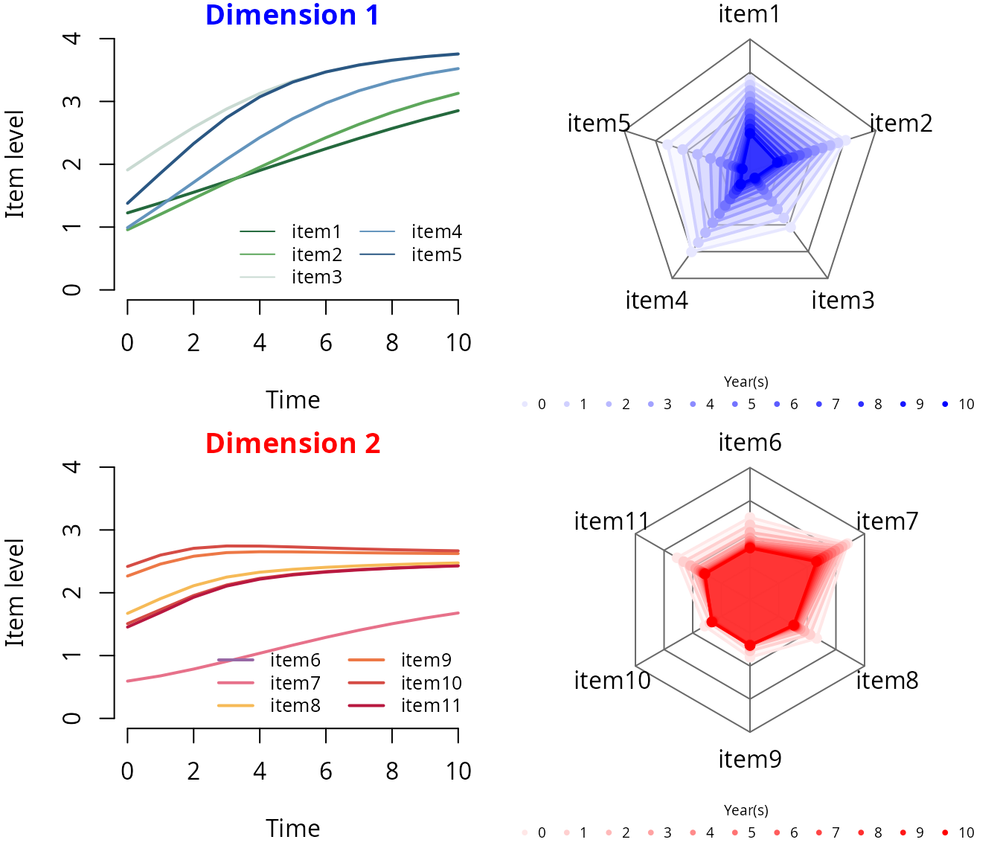
Sequence of items’ impairment according to the dimension continuum
par(mfrow=c(1,2))
## dimension 1
level_col_d1 <- generate_gradient(color1="white", color2="blue", n=nl+1)[-1]
# item thresholds
thres1 <- D1$thres
thres1_bounds <- range(thres1)
# item discrimination
discrim1 <- D1$discrim
# covariate effects
varexp1 <- as.data.frame(sumD1$mixedModel)$coef[-1]
varexp1_lab <- paste(row.names(sumD1$mixedModel),
" (",ifelse(as.data.frame(sumD1$mixedModel)$'p-value'==0,
"<0.001",
as.data.frame(sumD1$mixedModel)$'p-value'),")",sep="")[-1]
# plot
par(mar = c(0,.5,2,.5))
p <- ni1; ext <- .75
plot(y = rep(p,2), x = c(thres1_bounds[1]-ext,thres1[1,item_lab_d1[1]]),
lwd = 30, type = "l", col = level_col_d1[1],
xlim = thres1_bounds + c(-1,1)*ext, ylim = c(-1.2, 6.5),
xlab = "", ylab = "", main = "Dimension 1", col.main = "blue",
yaxt = "n", bty = "l", legend = NULL, cex.lab=1.5, cex.axis=1.5, axes = F)
for(i in 1:ni1){
lines(y = rep(p,2), x = c(thres1_bounds[1]-ext,thres1[1,item_lab_d1[i]]),
lwd = 30, col = level_col_d1[1])
for(m in 1:(nl-2))
lines(y = rep(p,2), x = thres1[m:(m+1),item_lab_d1[i]],
lwd = 30, col = level_col_d1[m+1])
lines(y = rep(p,2), x = c(thres1[nl-1,item_lab_d1[i]],thres1_bounds[2]+ext),
lwd = 30, col = level_col_d1[nl])
p <- p-1
}
mtext(text = item_lab_d1, side=4, at = ni1:1, line = -18, cex = 1, las=1, font = 1, col="white")
# varexp
p <- thres1_bounds[1]; deb <- 0
rect(xleft = rep(p,length(varexp1)), xright = p+varexp1,
ybottom = deb-0.15-(1:length(varexp1)-1)*.8, ytop = deb+0.15-(1:length(varexp1)-1)*.8,
col = "black")
lines(x = rep(p,2), y = c(deb+0.35,deb-0.35-(length(varexp1)-1)),
lty = 3, lwd = 2, col = "darkgrey")
p <- p + ifelse(varexp1<0,0,varexp1) + 0.05
text(x = p, y = -seq(from=0,to=length(varexp1)-1,by=0.8)+deb,
pos = 4, labels = varexp1_lab, cex = .8)
## dimension 2
level_col_d2 <- generate_gradient(color1="white", color2="red", n=nl+1)[-1]
# item thresholds
thres2 <- D2$thres
thres2_bounds <- range(thres2)
# item discrimination
discrim2 <- D2$discrim
# covariate effects
varexp2 <- as.data.frame(sumD2$mixedModel)$coef[-1]
varexp2_lab <- paste(row.names(sumD2$mixedModel),
" (",ifelse(as.data.frame(sumD2$mixedModel)$'p-value'==0,
"<0.001",
as.data.frame(sumD2$mixedModel)$'p-value'),")",sep="")[-1]
# plot
par(mar = c(0,.5,2,.5))
p <- ni2; ext <- .75
plot(y = rep(p,2), x = c(thres2_bounds[1]-ext,thres2[1,item_lab_d2[1]]),
lwd = 30, type = "l", col = level_col_d2[1],
xlim = thres2_bounds + c(-1,1)*ext, ylim = c(-1.2, 6.5),
xlab = "", ylab = "", main = "Dimension 2", col.main = "red",
yaxt = "n", bty = "l", legend = NULL, cex.lab=1.5, cex.axis=1.5, axes = F)
for(i in 1:ni2){
lines(y = rep(p,2), x = c(thres2_bounds[1]-ext,thres2[1,item_lab_d2[i]]),
lwd = 30, col = level_col_d2[1])
for(m in 1:(nl-2))
lines(y = rep(p,2), x = thres2[m:(m+1),item_lab_d2[i]],
lwd = 30, col = level_col_d2[m+1])
lines(y = rep(p,2), x = c(thres2[nl-1,item_lab_d2[i]],thres2_bounds[2]+ext),
lwd = 30, col = level_col_d2[nl])
p <- p-1
}
mtext(text = item_lab_d2, side=4, at = ni2:1, line = -18, cex = 1, las=1, font = 1, col="white")
# varexp
p <- thres2_bounds[1]; deb <- 0
rect(xleft = rep(p,length(varexp2)), xright = p+varexp2,
ybottom = deb-0.15-(1:length(varexp2)-1)*.8, ytop = deb+0.15-(1:length(varexp2)-1)*.8,
col = "black")
lines(x = rep(p,2), y = c(deb+0.35,deb-0.35-(length(varexp2)-1)),
lty = 3, lwd = 2, col = "darkgrey")
p <- p + ifelse(varexp2<0,0,varexp2) + 0.05
text(x = p, y = -seq(from=0,to=length(varexp2)-1,by=0.8)+deb,
pos = 4, labels = varexp2_lab, cex = .8) 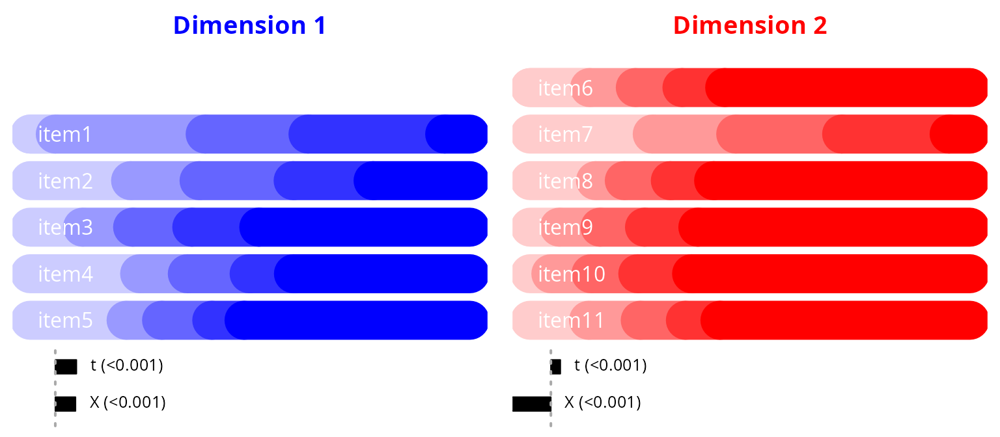
STEP 3 - Staging
Alignment of each subdimension’s progression with disease stages
The disease stages are projected onto the dimension continuum using a joint bivariate model that estimates the link between the disease stages and the dimension total sumscore. This can be performed using again the R-package JLPM, also adapted to treat continuous markers by replacing the cumulative probit measurement models by linear and curvilinear measurement models (the curvilinear model involves a parameterized bijective link function approximated by splines which captures the departure from normality of the variable) [2]. Then, thresholds (on the dimension continuum) that correspond to the disease stages can be deduced by predicting the dimension sumscores that correspond to a change of disease stage and expressing them in the dimension process scale. Note that, as this part requires the computation of dimension sumscores, visits with more than 25% of missing items are omitted.
Estimation of the proxy model
# dimension 1
D1ss <- jointLPM(fixed = D1_score + stage ~ t,
random = ~ 1 + t,
survival = Surv(T, D) ~ 1,
sharedtype = "CL",
var.time = "t",
subject = "ID",
data = data,
link = c("5-quant-splines","thresholds"),
methInteg = "QMC",
nMC = 1000,
nproc = 20,
verbose = T)
# dimension 2
D2ss <- jointLPM(fixed = D2_score + stage ~ t,
random = ~ 1 + t,
survival = Surv(T, D) ~ 1,
sharedtype = "CL",
var.time = "t",
subject = "ID",
data = data,
link = c("5-quant-splines","thresholds"),
methInteg = "QMC",
nMC = 1000,
nproc = 20,
verbose = T)The summary of the estimation of proxy dimension 1:
summary(D1ss)
#> Joint latent process model with shared random effects
#> fitted by maximum likelihood method
#>
#> jointLPM(fixed = D1_score + stage ~ t, random = ~1 + t, subject = "ID",
#> link = c("5-quant-splines", "thresholds"), var.time = "t",
#> survival = Surv(T, D) ~ 1, sharedtype = "CL", methInteg = "QMC",
#> nMC = 1000, data = data, verbose = T, nproc = 20)
#>
#> Statistical Model:
#> Dataset: data
#> Number of subjects: 700
#> Number of observations: 5524
#> Number of parameters: 19
#> Event 1 :
#> Number of events: 464
#> Weibull baseline risk function
#> Link functions: Quadratic I-splines with nodes 0 7 10 13 20 for D1_score
#> Thresholds for stage
#>
#> Iteration process:
#> Convergence criteria satisfied
#> Number of iterations: 15
#> Convergence criteria: parameters= 3.4e-08
#> : likelihood= 1.6e-07
#> : second derivatives= 6.4e-14
#>
#> Goodness-of-fit statistics:
#> maximum log-likelihood: -11440.53
#> AIC: 22919.06
#> BIC: 23005.53
#>
#> Maximum Likelihood Estimates:
#>
#>
#> Parameters in the proportional hazard model:
#>
#>
#> coef Se Wald p-value
#> event1 +/-sqrt(Weibull1) 0.32144 0.01532 20.978 0.00000
#> event1 +/-sqrt(Weibull2) 1.13243 0.02953 38.353 0.00000
#> event1 asso 0.46219 0.04344 10.640 0.00000
#>
#> Fixed effects in the longitudinal model:
#>
#> coef Se Wald p-value
#> intercept (not estimated) 0.00000
#> t 0.60412 0.02823 21.4 0
#>
#>
#> Variance-covariance matrix of the random-effects:
#> (the variance of the first random effect is not estimated)
#> intercept t
#> intercept 1.00000
#> t 0.05106 0.05986
#>
#>
#> Residual standard error: 0.64210 4.57294
#>
#> Parameters of the link functions:
#>
#> coef Se Wald p-value
#> D1_score-I-splines1 -3.29981 0.17375 -18.992 0.00000
#> D1_score-I-splines2 1.13156 0.08750 12.932 0.00000
#> D1_score-I-splines3 1.15979 0.05946 19.507 0.00000
#> D1_score-I-splines4 1.28021 0.03743 34.200 0.00000
#> D1_score-I-splines5 1.25577 0.04001 31.388 0.00000
#> D1_score-I-splines6 1.16593 0.06690 17.428 0.00000
#> D1_score-I-splines7 1.47776 0.08699 16.989 0.00000
#> stage-Thresh1 -5.48493 0.49155 -11.158 0.00000
#> stage-Thresh2 2.06206 0.08445 24.418 0.00000
#> stage-Thresh3 1.55126 0.06492 23.897 0.00000
#> stage-Thresh4 2.08718 0.08252 25.293 0.00000The summary of the estimation of proxy dimension 2:
summary(D2ss)
#> Joint latent process model with shared random effects
#> fitted by maximum likelihood method
#>
#> jointLPM(fixed = D2_score + stage ~ t, random = ~1 + t, subject = "ID",
#> link = c("5-quant-splines", "thresholds"), var.time = "t",
#> survival = Surv(T, D) ~ 1, sharedtype = "CL", methInteg = "QMC",
#> nMC = 1000, data = data, verbose = T, nproc = 20)
#>
#> Statistical Model:
#> Dataset: data
#> Number of subjects: 700
#> Number of observations: 5524
#> Number of parameters: 19
#> Event 1 :
#> Number of events: 464
#> Weibull baseline risk function
#> Link functions: Quadratic I-splines with nodes 0 4 8 13 24 for D2_score
#> Thresholds for stage
#>
#> Iteration process:
#> Convergence criteria satisfied
#> Number of iterations: 44
#> Convergence criteria: parameters= 5.6e-06
#> : likelihood= 1.3e-06
#> : second derivatives= 6e-11
#>
#> Goodness-of-fit statistics:
#> maximum log-likelihood: -12002.19
#> AIC: 24042.38
#> BIC: 24128.85
#>
#> Maximum Likelihood Estimates:
#>
#>
#> Parameters in the proportional hazard model:
#>
#>
#> coef Se Wald p-value
#> event1 +/-sqrt(Weibull1) 0.44843 0.00659 68.090 0.00000
#> event1 +/-sqrt(Weibull2) 1.29890 0.02381 54.549 0.00000
#> event1 asso -0.01971 0.02090 -0.943 0.34572
#>
#> Fixed effects in the longitudinal model:
#>
#> coef Se Wald p-value
#> intercept (not estimated) 0.00000
#> t 0.25992 0.02329 11.161 0
#>
#>
#> Variance-covariance matrix of the random-effects:
#> (the variance of the first random effect is not estimated)
#> intercept t
#> intercept 1.00000
#> t 0.05058 0.29009
#>
#>
#> Residual standard error: 0.51159 8.76991
#>
#> Parameters of the link functions:
#>
#> coef Se Wald p-value
#> D2_score-I-splines1 -2.63468 0.10283 -25.623 0.00000
#> D2_score-I-splines2 1.16905 0.03212 36.400 0.00000
#> D2_score-I-splines3 0.76190 0.04499 16.934 0.00000
#> D2_score-I-splines4 1.03236 0.03451 29.915 0.00000
#> D2_score-I-splines5 1.38736 0.03912 35.463 0.00000
#> D2_score-I-splines6 0.61250 0.10703 5.723 0.00000
#> D2_score-I-splines7 1.76780 0.05897 29.976 0.00000
#> stage-Thresh1 -11.49613 1.29089 -8.906 0.00000
#> stage-Thresh2 2.81637 0.15640 18.007 0.00000
#> stage-Thresh3 2.12124 0.11886 17.846 0.00000
#> stage-Thresh4 2.85427 0.15446 18.478 0.00000Predicted item levels according to dimension level with disease stages
par(mfrow=c(1,2))
## dimension 1
proj1 <- IRT4Sstaging(D=D1,Dss=D1ss,nsim=10000,bounds=c(-15,15))
thres1_bounds <- range(thres1_bounds,proj1)
# plot
par(mar = c(0,.5,2,.5))
p <- ni1; ext <- 2
plot(y = rep(p,2), x = c(thres1_bounds[1]-ext,thres1[1,item_lab_d1[1]]),
lwd = 30, type = "l", col = level_col_d1[1],
xlim = thres1_bounds+c(-1,1)*ext, ylim = c(.5, 6.5),
xlab = "", ylab = "", main = "Dimension 1", col.main = "blue",
yaxt = "n", bty = "l", legend = NULL, cex.lab=1.5, cex.axis=1.5, axes = F)
for(i in 1:ni1){
lines(y = rep(p,2), x = c(thres1_bounds[1]-ext,thres1[1,item_lab_d1[i]]),
lwd = 30, col = level_col_d1[1])
for(m in 1:(nl-2))
lines(y = rep(p,2), x = thres1[m:(m+1),item_lab_d1[i]],
lwd = 30, col = level_col_d1[m+1])
lines(y = rep(p,2), x = c(thres1[nl-1,item_lab_d1[i]],thres1_bounds[2]+ext),
lwd = 30, col = level_col_d1[nl])
p <- p-1
}
mtext(text = item_lab_d1, side=4, at = ni1:1, line = -18, cex = 1, las=1, font = 1, col="white")
# stages
for(j in 1:length(proj1))
lines(x = rep(proj1[j],2), y = c(0.5,ni1+0.5), lwd = 4, col = "black")
par(xpd=TRUE)
text(y = ni1+0.8,
x = ( c(proj1,thres1_bounds[2]+ext) - c(thres1_bounds[1]-ext,proj1) ) / 2 +
c(thres1_bounds[1]-ext,proj1),
labels = as.roman(1:(length(proj1)+1)), cex = 1.5, col = "black", font = 2)
## dimension 2
proj2 <- IRT4Sstaging(D=D2,Dss=D2ss,nsim=10000,bounds=c(-15,15))
thres2_bounds <- range(thres2_bounds,proj2)
# plot
par(mar = c(0,.5,2,.5))
p <- ni2; ext <- 2
plot(y = rep(p,2), x = c(thres2_bounds[1]-ext,thres2[1,item_lab_d2[1]]),
lwd = 30, type = "l", col = level_col_d2[1],
xlim = thres2_bounds+c(-1,1)*ext, ylim = c(.5, 6.5),
xlab = "", ylab = "", main = "Dimension 2", col.main = "red",
yaxt = "n", bty = "l", legend = NULL, cex.lab=1.5, cex.axis=1.5, axes = F)
for(i in 1:ni2){
lines(y = rep(p,2), x = c(thres2_bounds[1]-ext,thres2[1,item_lab_d2[i]]),
lwd = 30, col = level_col_d2[1])
for(m in 1:(nl-2))
lines(y = rep(p,2), x = thres2[m:(m+1),item_lab_d2[i]],
lwd = 30, col = level_col_d2[m+1])
lines(y = rep(p,2), x = c(thres2[nl-1,item_lab_d2[i]],thres2_bounds[2]+ext),
lwd = 30, col = level_col_d2[nl])
p <- p-1
}
mtext(text = item_lab_d2, side=4, at = ni2:1, line = -18, cex = 1, las=1, font = 1, col="white")
# stages
for(j in 1:length(proj2))
lines(x = rep(proj2[j],2), y = c(0.5,ni2+0.5), lwd = 4, col = "black")
par(xpd=TRUE)
text(y = ni2+0.8,
x = ( c(proj2,thres2_bounds[2]+ext) - c(thres2_bounds[1]-ext,proj2) ) / 2 +
c(thres2_bounds[1]-ext,proj2),
labels = as.roman(1:(length(proj2)+1)), cex = 1.5, col = "black", font = 2)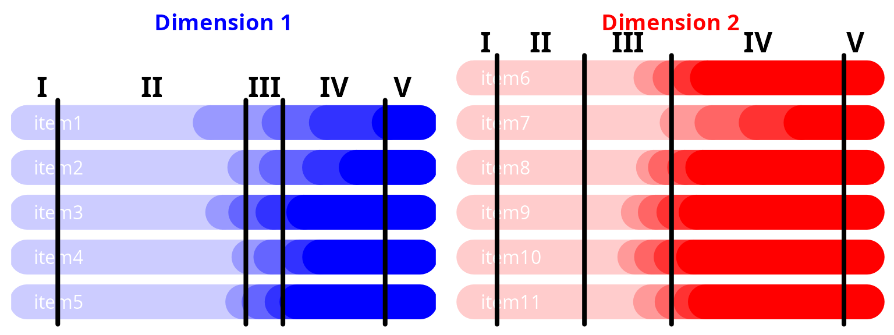
STEP 4 - Selecting
Identification of the most informative items across disease stages
The contribution of each item to the underlying dimension can be quantified by the percentage of information it carries at each stage. The information is defined by the Fisher Information function (i.e., the second derivative of the item probability with respect to the underlying dimension) which is integrated over all the underlying dimension values corresponding to a specific stage (as determined in Step 3) to obtain the item-and-stage-specific information. The total information of a dimension at a specific stage is then the sum of all the item-and-stage-specific informations so that the percentage of total information carried by an item at a disease stage can be easily deduced.
Computation of Fisher information by stage
Information computation for dimension 1:
# dimension 1
fisher1 <- IRT4Sselecting(D=D1,proj=proj1)
lapply(X = fisher1, FUN = round, digits = 2)
#> $raw_info
#> 1 2 3 4 5
#> item1 0 0.67 0.32 0.90 0.10
#> item2 0 0.43 0.69 1.74 0.01
#> item3 0 0.62 1.54 1.64 0.00
#> item4 0 0.13 1.27 2.05 0.00
#> item5 0 0.40 3.34 2.56 0.00
#>
#> $percent_info
#> 1 2 3 4 5
#> item1 100 29.79 4.50 10.15 90.1
#> item2 0 19.31 9.61 19.58 9.9
#> item3 0 27.45 21.56 18.42 0.0
#> item4 0 5.70 17.70 23.04 0.0
#> item5 0 17.74 46.63 28.81 0.0Information computation for dimension 2:
# dimension 2
fisher2 <- IRT4Sselecting(D=D2,proj=proj2)
lapply(X = fisher2, FUN = round, digits = 2)
#> $raw_info
#> 1 2 3 4 5
#> item6 0 0.00 1.90 4.12 0.00
#> item7 0 0.01 0.26 1.09 0.01
#> item8 0 0.00 1.89 4.15 0.00
#> item9 0 0.00 4.11 3.65 0.00
#> item10 0 0.00 4.23 3.31 0.00
#> item11 0 0.00 2.20 3.37 0.00
#>
#> $percent_info
#> 1 2 3 4 5
#> item6 0 0 13.03 20.93 0
#> item7 100 100 1.75 5.54 100
#> item8 0 0 12.94 21.07 0
#> item9 0 0 28.19 18.55 0
#> item10 0 0 29.00 16.82 0
#> item11 0 0 15.09 17.09 0Plot of item contributions by disease stage
layout.matrix <- matrix(c(1,1,4,4,
2,3,5,6), nrow = 2, ncol = 4, byrow = T)
layout(mat = layout.matrix,
heights = c(6.5,3.1),
widths = c(2.4,2.2,2.4,2.2))
par(cex=1)
spc <- 0.5 # space btw barplots
## dimension 1
# CASE 1 : info percent
par(mar=c(0.5,0.75,4,4.5))
barplot(height = fisher1$percent_info[ni1:1,], col = item_col_d1, border = TRUE,
xlab = "", axes = FALSE, axisnames = FALSE, space = spc)
axis(4,line=0.5,las=1,lwd=2, labels = c("0%","25%","50%","75%","100%"),
at=c(0,25,50,75,100),cex.axis=1,font=2)
mtext(text = as.roman(1:(length(proj1)+1)), cex = 1, side = 3, line = 0, font = 2,
at = .5+((1:(length(proj1)+1))-1)+spc*(1:(length(proj1)+1)))
mtext(text = "Percentage of information", cex = 1, side = 3, line = 1.35, font = 1.5)
par(xpd=TRUE)
text(y = 100 + 35, x = 0.25,
labels = "Dimension 1", cex = 1.25, col = "blue", adj = 0, font = 2)
# CASE 2 : cumulated info percent
par(mar=c(0.5,1.5,2.2,4))
barplot(height = colSums(fisher1$raw_info), col = "grey", border = F,
xlab = "", axes = FALSE, axisnames = FALSE, space = 0.2)
axis(4,line=0.5,las=1,lwd=1,labels = c(0.0,"",round(max(colSums(fisher1$raw_info)),1)),
at=c(0,max(colSums(fisher1$raw_info))/2,max(colSums(fisher1$raw_info))),
cex.axis=.8,font=1,col="grey",col.axis="grey")
mtext(text = as.roman(1:(length(proj1)+1)), cex = .8, side = 3, line = 0, font = 1,
col = "grey", at = .5+((1:(length(proj1)+1))-1)+.2*(1:(length(proj1)+1)))
mtext(text = "Total information", col = "grey", cex = .8, side = 3, line = 1, font = 1.5)
# CASE 3 : legend
par(mar=c(0,0,0,0))
plot(x = 0, y = 0, col="white", type="p", bty="n", axes = FALSE,
xlab="",ylab="",xlim=c(0,1),ylim=c(0,1))
legend(x = 0, y = 1.1, fill = item_col_d1, border = F,
legend = item_lab_d1, ncol = 1, bty = "n", cex = .8, y.intersp=1.3, x.intersp=0.5)
## dimension 2
# CASE 1 : info percent
par(mar=c(0.5,0.75,4,4.5))
barplot(height = fisher2$percent_info[ni2:1,], col = item_col_d2, border = TRUE,
xlab = "", axes = FALSE, axisnames = FALSE, space = spc)
axis(4,line=0.5,las=1,lwd=2, labels = c("0%","25%","50%","75%","100%"),
at=c(0,25,50,75,100),cex.axis=1,font=2)
mtext(text = as.roman(1:(length(proj2)+1)), cex = 1, side = 3, line = 0, font = 2,
at = .5+((1:(length(proj2)+1))-1)+spc*(1:(length(proj2)+1)))
mtext(text = "Percentage of information", cex = 1, side = 3, line = 1.35, font = 1.5)
par(xpd=TRUE)
text(y = 100 + 35, x = 0.25,
labels = "Dimension 2", cex = 1.25, col = "red", adj = 0, font = 2)
# CASE 2 : cumulated info percent
par(mar=c(0.5,1.5,2.2,4))
barplot(height = colSums(fisher2$raw_info), col = "grey", border = F,
xlab = "", axes = FALSE, axisnames = FALSE, space = 0.2)
axis(4,line=0.5,las=1,lwd=1,labels = c(0.0,"",round(max(colSums(fisher2$raw_info)),1)),
at=c(0,max(colSums(fisher2$raw_info))/2,max(colSums(fisher2$raw_info))),
cex.axis=.8,font=1,col="grey",col.axis="grey")
mtext(text = as.roman(1:(length(proj2)+1)), cex = .8, side = 3, line = 0, font = 1,
col = "grey", at = .5+((1:(length(proj2)+1))-1)+.2*(1:(length(proj2)+1)))
mtext(text = "Total information", col = "grey", cex = .8, side = 3, line = 1, font = 1.5)
# CASE 3 : legend
par(mar=c(0,0,0,0))
plot(x = 0, y = 0, col="white", type="p", bty="n", axes = FALSE,
xlab="",ylab="",xlim=c(0,1),ylim=c(0,1))
legend(x = 0, y = 1.1, fill = item_col_d2, border = F,
legend = item_lab_d2, ncol = 1, bty = "n", cex = .8, y.intersp=1.3, x.intersp=0.5)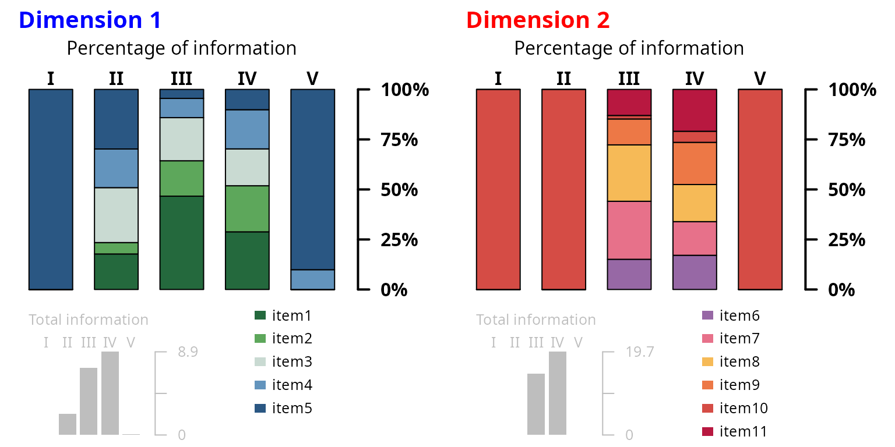
References
[1] Reeve, B. B., Hays, R. D., Bjorner, J. B., Cook, K. F., Crane, P. K., Teresi, J. A., et al. (2007) Psychometric evaluation and calibration of health-related quality of life item banks: plans for the Patient-Reported Outcomes Measurement Information System (PROMIS). Medical Care, 45:S22–31.
[2] Saulnier, T., Philipps, V., Meissner, W. G., Rascol, O., Pavy-Le Traon, A., Foubert-Samier, A., and Proust-Lima, C. (2022). Joint models for the longitudinal analysis of measurement scales in the presence of informative dropout. Methods, 203:142–151.